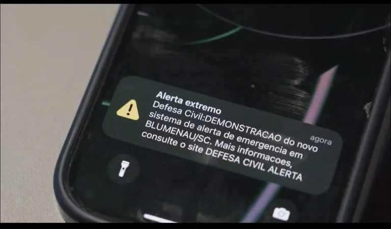

Somos um sistema integrado de monitoramento e alerta de enchentes Combinamos tecnologias de hardware e software para fornecer a você cliente informações em tempo real, além de promover ações preventivas e eficazes contra tal problemática.
Enchentes causam prejuízos, colocam vidas em risco e surpreendem comunidades sem qualquer aviso ou preparo prévio. Sem alertas antecipados e dados confiáveis, a resposta é lenta e os danos aumentam com a frequência dos eventos extremos.

Sensores de nível e Arduino realizam monitoramento contínuo e análise local dos dados para detectar riscos rapidamente. Aplicativo móvel envia alertas em tempo real, oferece gráficos e integra órgãos públicos para ampliar o alcance das notificações.

Prevenir danos causados por enchentes, enviando alertas antecipados para proteger vidas e reduzir prejuízos materiais. Ampliar o alcance dos alertas, integrar órgãos públicos e expandir a solução para diferentes regiões com tecnologia confiável.

Moradores em áreas de risco que precisam de avisos rápidos para se protegerem e proteger seus bens. Órgãos públicos, empresas, condomínios, escolas e projetos urbanos que buscam prevenção e monitoramento eficaz contra enchentes.

Notificações em tempo real que permitem agir antes das enchentes e evitar danos materiais e pessoais. Sistema automatizado, confiável, integrado com órgãos públicos e acessível via aplicativo móvel para todos os usuários.
A solução fornece alertas em tempo real, permitindo que usuários se preparem e evitem riscos de enchentes. Com dados acessíveis no app, moradores e autoridades tomam decisões rápidas e protegem pessoas e patrimônios com eficiência.